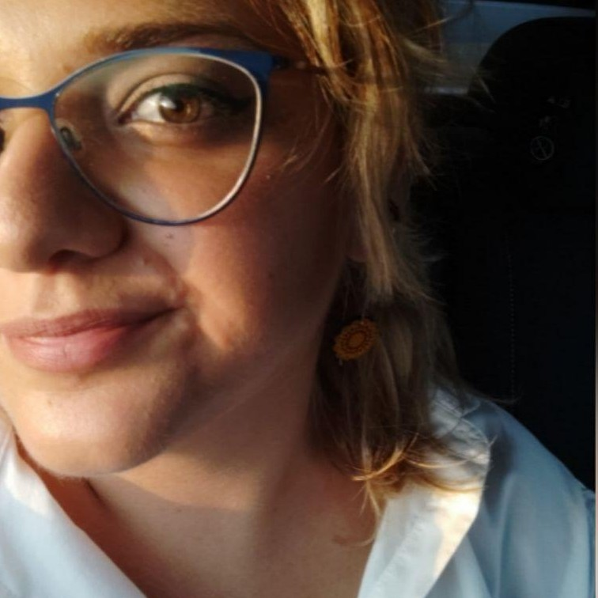

Mathematical Modelling & Dynamical Systems
Mathematical analysis of dynamical systems, stability, multiple time-scale dynamics and Geometric Singular Perturbation Theory.
Dynamical systems · Stability analysis · GSPT
Medical Statistics · Mathematical Modelling · Epidemiology
Tenure Track Assistant Professor (RTT) in Medical Statistics
Department of Life Sciences, Health and Health Professions · Link Campus University
I am a quantitative researcher working at the intersection of medical statistics, mathematical modelling and epidemiology. My research spans the mathematical analysis of epidemic processes, including network dynamics and the spread of information, as well as clinical and epidemiological data analysis, health technology assessment, and mechanistic modelling in biomedical applications.

Mathematical and epidemic modelling
Medical statistics and epidemiology
Information and behavioural dynamics
Health Technology Assessment
Mechanistic biomedical modelling
Department of Life Sciences, Health and Health Professions
Link Campus University
Research at the intersection of mathematical, statistical and biomedical sciences.
Mathematical analysis of dynamical systems, stability, multiple time-scale dynamics and Geometric Singular Perturbation Theory.
Epidemic models on networks and graphs, information and misinformation spreading, and the role of behavioural dynamics in epidemic transmission.
Clinical and cohort data analysis, cancer and cardiovascular epidemiology, survival and longitudinal analysis, forecasting and risk prediction.
Economic evaluation and cost-effectiveness analysis of healthcare interventions, with a particular focus on vaccination strategies.
Mechanistic mathematical models of drug interactions and therapeutic antibody immunogenicity in chronic inflammatory diseases.
Mathematical modelling and data analysis for vector-borne disease control, including Wolbachia-based strategies, and avian influenza transmission across poultry farms.